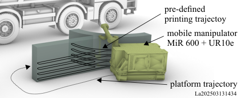
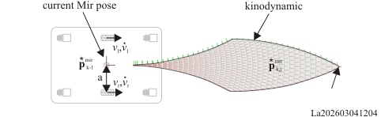
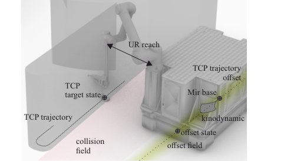

Chapter overview
Trajectory Planning
Trajectory planning is formulated as a coupled problem between the predefined tool center point (TCP) path and the nonholonomic mobile base. While the TCP trajectory is derived from the slicing process and must be followed with high accuracy, the mobile platform trajectory must be generated such that reachability, collision avoidance, and kinematic feasibility are ensured at all times.
- The TCP path is defined by the additive manufacturing process and imposes strict geometric and temporal constraints, including a continuous feed-rate and fixed path progression.
- Due to the eccentric mounting of the manipulator on the mobile platform, base motions directly affect the reachable workspace, requiring coordinated base–manipulator planning.
- The feasible platform motion is constrained by a narrow corridor between collision with the printed structure and violation of the manipulator reach limits.
- A combination of artificial potential fields and kinodynamic sampling is used to evaluate candidate platform states and generate a feasible trajectory along the TCP path.



